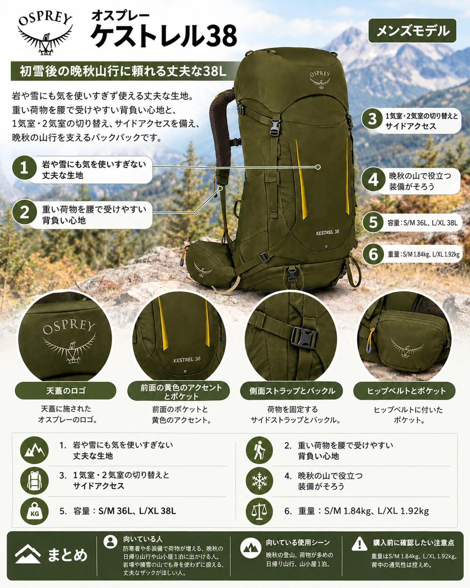

10月下旬、剱・立山では9月30日に初雪が降り、後立山の山小屋も大半が営業を終えました。上高地でも朝の気温が7〜8℃まで下がる日が出てきて、山はすっかり冬支度の季節です。週の前半は前線の通過で雨が続きましたが、22日以降は回復傾向。この週末に晩秋の山へ出かける人も多いはずです。この時期の山行では、ダウンや手袋、厚手のレインウェアが加わり、荷物は夏よりかさばります。標高の高い山では、初雪後の凍った登山道に備えて軽アイゼンを持つ人もいるでしょう。そこで紹介したいのが、オスプレーの「ケストレル38」です。軽さよりも、生地の丈夫さと機能の多さを重視した38Lのザックで、営業中の山小屋を使う1泊や、防寒着の多い日帰り山行に向いています。ウィメンズモデルとしては「カイト38」があります。
基本スペック
項目：内容
商品名：ケストレル38（オスプレー）
品番：OS50383
素材：メイン：bluesign認証420Dリサイクルナイロン／ボトム：bluesign認証500Dリサイクル高強度ナイロン（いずれもPFASフリー撥水加工）
価格：34,100円（公式オンラインストアの表示）
発売日：2026年3月1日
※仕様と価格は、2026年10月23日に確認したオスプレーの国内正規代理店の公式オンラインストア（ブルーシープ）の表示です。
| 項目 | S/M | L/XL |
|---|---|---|
| 容量 | 36L | 38L |
| 重量 | 1.84kg | 1.92kg |
| 外寸（縦×横×奥） | 74×34×28cm | 79×34×28cm |
| 背面長 | 43〜53cm | 48〜58cm |
岩や雪にも気を使いすぎない丈夫な生地
本体には420D、底には500Dのリサイクルナイロンを使っています。使った人の声でも、この丈夫さが共通して評価されています。頑丈な生地、丈夫な作りという声が多く、長期の山行でも傷みが少なかったという声もありました。晩秋の岩場や、凍った地面にザックを置く場面でも安心感があります。
重い荷物を腰で受けやすい背負い心地
背面は「エアスケープバックパネル」で、背面長を調整できます。S/Mは43〜53cm、L/XLは48〜58cmの範囲で体に合わせられます。使った人の声では、長く急な登りでも快適だった、重い荷物ほどよく背負えるとされています。防寒着や水で荷物が重くなる晩秋の山行で生きる特長です。
1気室・2気室の切り替えとサイドアクセス
下の気室に寝具や着替えなど小屋に着くまで使わない物、上に行動中に使う物を入れる、という分け方ができます。仕切りを外せば1気室としても使えます。さらにサイドアクセスジッパーがあるので、ザックの中ほどにある物も上から全部出さずに取り出せます。
晩秋の山で役立つ装備がそろう
天気が急に崩れたときにすぐ使えるレインカバーや、初雪後の山で使うピッケルの固定部など、季節の変わり目の山に合う装備が最初からそろっています。
- アイスアックスの固定部が2か所あり、トレッキングポールも一時的に固定できる
- 固定式のトップポケット（雨蓋）があり、荷室側にはメッシュポケットも付いている
- ヒップベルトにジッパーポケットが2つあり、行動食や手袋をすぐ出せる
- レインカバーを標準装備
- 3Lまでのハイドレーションリザーバーに対応
デメリット・注意点
- 重い：L/XLで1.92kgあります。使った人の声でも、同クラスのザックより重いことが短所として共通して挙がっています。軽さを優先する人には向きません。
- 背中の通気は控えめ：背面はメッシュで覆われたフレームシートで、背中から浮かせるトランポリン式ではありません。重い荷物を安定させやすい反面、暑い時期や汗をかきやすい人は背中の蒸れが気になる可能性があります。
- 細かな使い勝手への指摘もある：フロントのポケットがあまり大きくなく伸びも少ないこと、下部のコンプレッションベルトにバックルが無いことを挙げる声があります。内蔵のレインカバーは好みが分かれるという声もあります。いずれも一部の意見です。
- 国内モデルとの違いに注意：使った人の声の多くは、2023〜2024年の海外版についてのものです。国内で2026年3月に発売されたモデルと細部が同じとは限らないため、購入前に店頭で確かめてください。
向いている人・向いていない人
◎向いている人
- 防寒着や冬装備で荷物が増える、晩秋の日帰り山行や山小屋1泊に出かける人
- 岩場や残雪の山でも気を使わずに扱える、丈夫なザックがほしい人
- ピッケルやトレッキングポールを外付けしたい人
- 背面長を細かく合わせたい人
△向いていない人
- ザックの重さを少しでも減らしたい、軽量志向の人
- 夏の低山がメインで、背中の通気性を最優先したい人
まとめ
ケストレル38は、軽さと引き換えに、丈夫な生地と晩秋の山で役立つ機能をそろえた38Lのザックです。背面長を調整できる背面、1気室・2気室の切り替え、サイドアクセス、アイスアックスの固定部、標準装備のレインカバーと、荷物が増える季節の山行で頼れる作りになっています。重さと背中の通気が気になる人は、店頭で荷物を入れて背負い比べてから選ぶと安心です。
この記事で紹介した商品
価格・重量・在庫は各ブランド公式サイトの記載（確認日つき）にもとづきます。商品を押すと、購入先を選べます。
この記事にはアフィリエイト広告が含まれます。リンク先での購入により、当サイトが報酬を受け取る場合があります。山行の前には、最新の気象とルートの状況を必ずご確認ください。